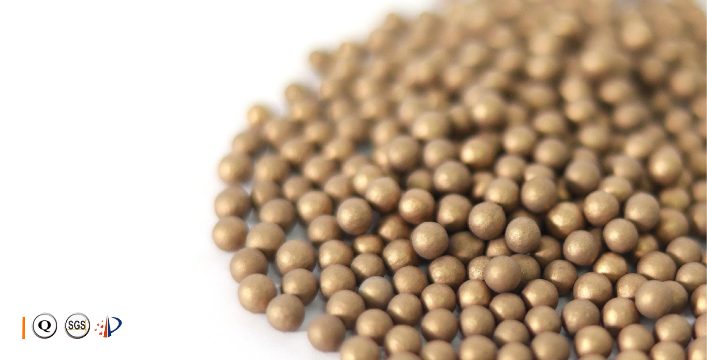
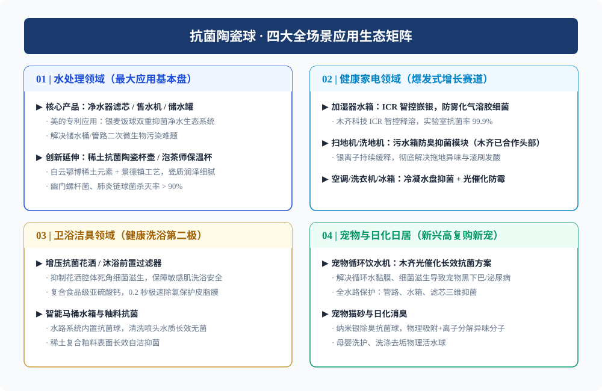
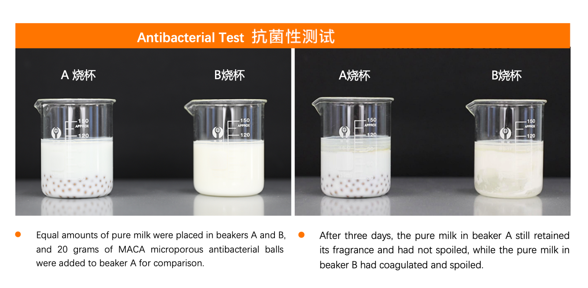
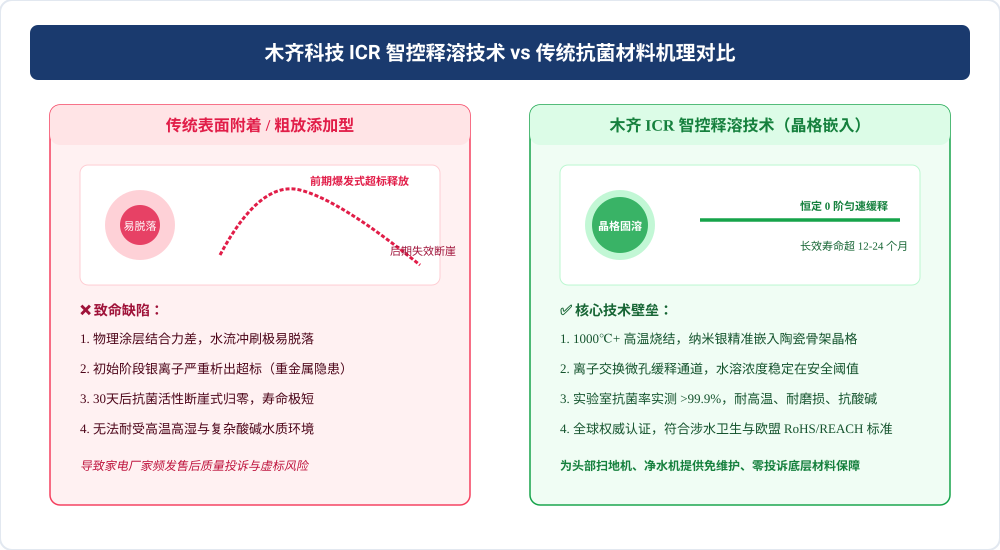
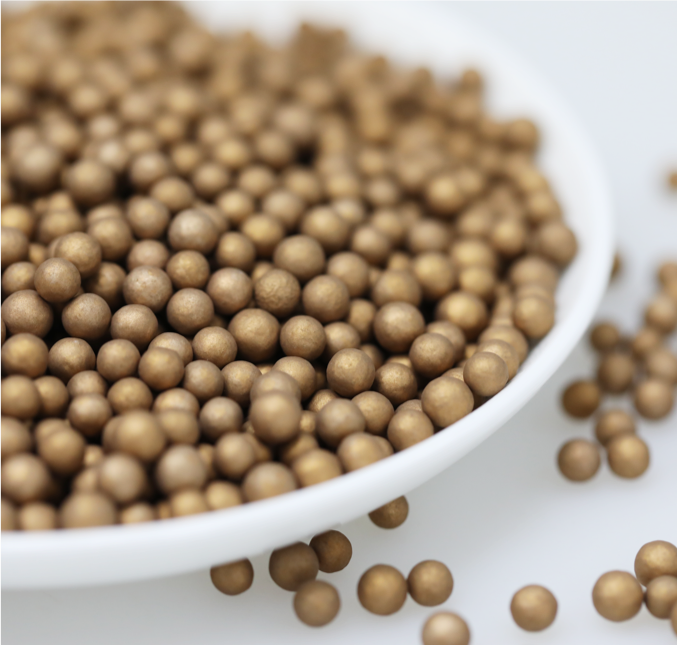
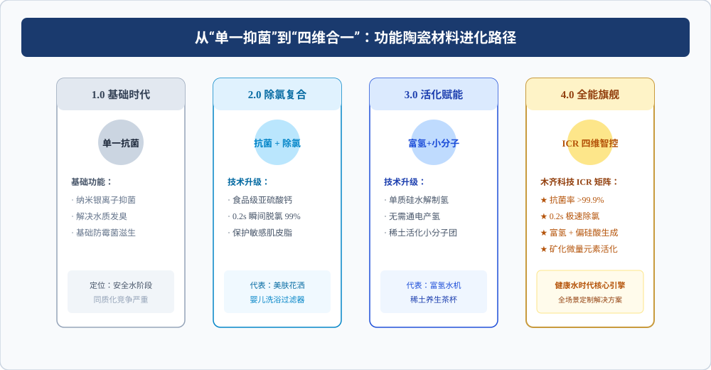
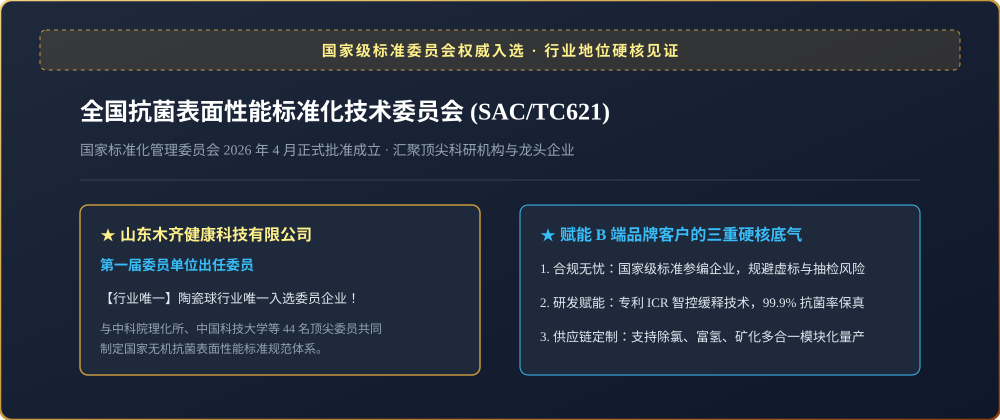

核心摘要：智能清洁电器与净水设备硬件性能飞速升级，但“涉水死角”的细菌滋生与异味问题始终是行业痛点。本文深度解构一线家电与净水大厂如何通过 MACA-KDF 无机抗菌陶瓷球 及 ICR（智控释溶）技术，实现 12~24 个月恒速微量长效抑菌。

图 1：1000℃ 高温烧结 MACA-KDF 无机抗菌合金多孔陶瓷颗粒实拍。
一、家电与净水大厂的共同隐痛：“涉水水路裸奔”
在扫地机器人、洗地机污水箱、超声波加湿器水槽及末端净水器碳棒内部，存水在 24 小时内极易滋生大量细菌生物膜（Biofilm）。污水箱发酸发臭、加湿器喷雾异味，已成为各大电商平台用户差评的核心来源。

图 2：无机抗菌陶瓷材料全场景应用生态矩阵：水处理、智能家电、卫浴洁具与宠物家居。
二、抗菌陶瓷球的四大核心应用场景
无机抗菌陶瓷材料具备耐沸水、耐酸碱冲刷与安全无重金属析出特性，在多场景中发挥核心作用：
| 应用领域 | 核心用户痛点 | 木齐陶瓷球解决方案 | 核心材料 / 关键技术 |
|---|---|---|---|
| 智能清洁电器 （扫地机 / 洗地机） |
污水箱存水发酸发臭、滚刷拖布发霉生菌 | 清水箱/污水箱缓释银离子抑菌模块 | MACA-KDF 抗菌合金材料 |
| 净水水处理系统 （家用净水器 / 碳棒） |
后置活性炭二次滋生细菌生物膜、管路污染 | 碳棒复合抗菌球、后置独立抑菌滤芯 | 无机抗菌陶瓷滤料 |
| 健康卫浴洁具 （美肤花洒 / 智能马桶） |
自来水余氯刺激皮肤、喷嘴滋生顽固细菌 | 除氯+抑菌二合一滤芯模块 | 食品级亚硫酸钙 + MACA-KDF |
| 宠物健康与加湿器 （宠物饮水机 / 加湿器） |
宠物唾液导致水质黏滑发臭、加湿器白粉细菌雾 | 长效自沉式抗菌模块、浮水抑菌滤包 | 食品接触级无机银陶瓷球 |

图 3：实验室纯牛奶抑菌保鲜对比测试：加入 MACA 陶瓷球的牛奶常温 3 天依然新鲜不凝固。
三、破解 30 天失效魔咒：木齐 ICR 智控释溶技术
传统添加型塑料或浸涂银材料存在“前期爆发式析出、30天后断崖式失效”的行业通病。木齐科技通过 ICR（Intelligent Controlled Release）智控释溶技术 彻底解决了这一难题。

图 4：木齐 ICR 零阶恒速释溶曲线与传统涂层材料爆发式消耗对比。
ICR 智控释溶三大核心优势：
1. 1000℃ 晶格固溶烧结： 纳米银牢牢锁在陶瓷微孔骨架内部，杜绝物理脱落；
2. 零阶恒速释放动力学： ppb 级别极微量恒定析出，长效抑菌寿命可达 12~24 个月；
3. 四维合一多功能复合： 复合食品级亚硫酸钙（0.2秒极速除氯 >99%）与固态制氢材料。

图 5：MACA-KDF 陶瓷球微观多孔晶格结构与均匀规整粒径。

图 6：功能陶瓷材料从单一抗菌向四维合一（抑菌 + 除氯 + 富氢 + 矿化）演进路径。
四、国家标委会第一届委员单位公信力背书
作为全国抗菌表面性能标准化技术委员会（SAC/TC621）第一届委员单位，木齐科技具备完整的国家涉水产品卫生安全许可、RoHS 及 REACH 国际环保认证，为全球头部品牌提供放心可靠的供应链托底。

图 7：全国抗菌表面性能标准化技术委员会 (SAC/TC621) 委员单位权威资质背书。
五、常见问题解答（FAQ）
问：扫地机器人或洗地机污水箱发酸发臭的原因是什么？如何解决？
答：存水在 24 小时内易滋生大量细菌生物膜产生腐败异味。木齐科技采用 ICR 智控释溶银离子陶瓷模块，通过 1000℃ 晶格固溶高温烧结，实现 12~24 个月恒定微量缓释，抑菌率超 99.9%，从源头杜绝异味。
问：抗菌陶瓷球能否按客户模具与水流通道进行定制？
答：可以。木齐科技支持 1-10mm 粒径定制、空心微球加工、注塑外壳模块化封装，以及结合除氯、富氢材料的复合配方设计。
相关主题与核心材料
广告位 · 预留广告容器
Google AdSense — 广告代码预留容器